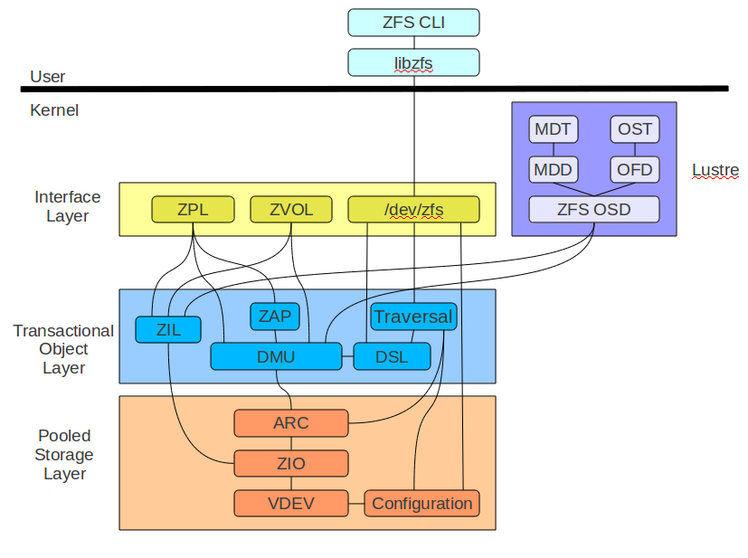

|
ZPIOS is benchmark designed to exercise the the ZFS Transaction Object Layer. It interfaces directly with the DMU just like the ZPL, ZVOL, or Lustre interface layers. Its purpose is to allow direct measurement of DMU performance without the overhead, bottlenecks, or other limitations which might exist in an one of the existing interface layers. The ZPIOS benchmark is packaged with the ZFS sources and is built as part of the normal build process. It consists of a kernel module called zpios.ko and a command line utility called zpios. After the kernel module is loaded the zpios command line utility is used to pass the test parameters to the kernel module. The test is then run entirely in the kernel and the results reported back via the command line utility. In addition, several wrapper scripts are provided to simplify running a ZPIOS test. The test script called zpios.sh takes a prebuilt pool configuration and test description. It then sets up the pool launches the described test case and reports the results. This provides a convenient way to survey multiple configurations and workloads. There are several sample pool configurations provided in the /usr/libexec/zfs/zpool-config/ directory. There are also several test workloads provided in the /usr/libexec/zfs/zpios-test/ directory. To add you own configuration or test workload you should use one of the samples as a template. First copy it to a new file in the proper directory and update it according to your requirements. As an example, the following zpios.sh command will use the lo-raidz2 configuration to create a raidz2 pool using four loopback devices. It will then run the tiny test case and report the read/write performance results. $ sudo /usr/libexec/zfs/zpios.sh -c lo-raidz2 -t tiny status name id wr-data wr-ch wr-bw rd-data rd-ch rd-bw ------------------------------------------------------------------------------- PASS: lo-raidz2 0 64m 64 203.09m 64m 64 1.25g Be careful about running a sample pool configuration without looking at the script to see what it does. Many of the configurations use loopback devices, scsi_debug devices, or temporarily files for the pool. These are all very safe to run. However others operate by default on real block devices, you must ensure these devices are not in use on your system or they will be overwritten. |